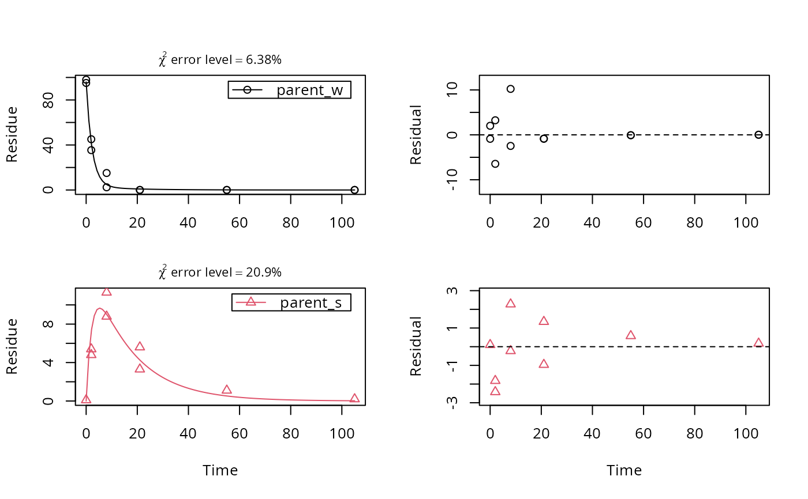

Three experimental datasets from two water sediment systems and one soil
test_data_from_UBA_2014.RdThe datasets were used for the comparative validation of several kinetic evaluation software packages (Ranke, 2014).
Format
A list containing three datasets as an R6 class defined by mkinds.
Each dataset has, among others, the following components
titleThe name of the dataset, e.g.
UBA_2014_WS_riverdataA data frame with the data in the form expected by
mkinfit
Source
Ranke (2014) Prüfung und Validierung von Modellierungssoftware als Alternative zu ModelMaker 4.0, Umweltbundesamt Projektnummer 27452
Examples
# \dontrun{
# This is a level P-II evaluation of the dataset according to the FOCUS kinetics
# guidance. Due to the strong correlation of the parameter estimates, the
# covariance matrix is not returned. Note that level P-II evaluations are
# generally considered deprecated due to the frequent occurrence of such
# large parameter correlations, among other reasons (e.g. the adequacy of the
# model).
m_ws <- mkinmod(parent_w = mkinsub("SFO", "parent_s"),
parent_s = mkinsub("SFO", "parent_w"))
#> Temporary DLL for differentials generated and loaded
f_river <- mkinfit(m_ws, test_data_from_UBA_2014[[1]]$data, quiet = TRUE)
#> Warning: Observations with value of zero were removed from the data
plot_sep(f_river)

summary(f_river)$bpar
#> Estimate se_notrans t value Pr(>t)
#> parent_w_0 95.98567441 2.16285684 44.3791159 1.245593e-17
#> k_parent_w 0.42068803 0.05573864 7.5475120 8.752928e-07
#> k_parent_s 0.07419672 0.10108562 0.7339987 2.371337e-01
#> f_parent_w_to_parent_s 0.14336920 0.05809346 2.4679062 1.305295e-02
#> f_parent_s_to_parent_w 1.00000000 3.13868615 0.3186046 3.772097e-01
#> sigma 2.98287858 0.68923267 4.3278253 2.987160e-04
#> Lower Upper
#> parent_w_0 91.48420501 100.4871438
#> k_parent_w 0.36593946 0.4836276
#> k_parent_s 0.02289956 0.2404043
#> f_parent_w_to_parent_s 0.08180934 0.2391848
#> f_parent_s_to_parent_w 0.00000000 1.0000000
#> sigma 2.00184022 3.9639169
mkinerrmin(f_river)
#> err.min n.optim df
#> All data 0.09246946 5 6
#> parent_w 0.06377096 3 3
#> parent_s 0.20882325 2 3
# This is the evaluation used for the validation of software packages
# in the expertise from 2014
m_soil <- mkinmod(parent = mkinsub("SFO", c("M1", "M2")),
M1 = mkinsub("SFO", "M3"),
M2 = mkinsub("SFO", "M3"),
M3 = mkinsub("SFO"),
use_of_ff = "max")
#> Temporary DLL for differentials generated and loaded
f_soil <- mkinfit(m_soil, test_data_from_UBA_2014[[3]]$data, quiet = TRUE)
#> Warning: Observations with value of zero were removed from the data
plot_sep(f_soil, lpos = c("topright", "topright", "topright", "bottomright"))
 summary(f_soil)$bpar
#> Estimate se_notrans t value Pr(>t) Lower
#> parent_0 76.55425650 0.859186398 89.1008711 1.113861e-26 74.755959420
#> k_parent 0.12081956 0.004601918 26.2541722 1.077359e-16 0.111561575
#> k_M1 0.84258615 0.806159719 1.0451851 1.545266e-01 0.113779564
#> k_M2 0.04210880 0.017083034 2.4649483 1.170188e-02 0.018013857
#> k_M3 0.01122918 0.007245855 1.5497385 6.885051e-02 0.002909431
#> f_parent_to_M1 0.32240200 0.240783878 1.3389684 9.819070e-02 NA
#> f_parent_to_M2 0.16099855 0.033691952 4.7785463 6.531136e-05 NA
#> f_M1_to_M3 0.27921507 0.269423709 1.0363419 1.565266e-01 0.022978202
#> f_M2_to_M3 0.55641252 0.595119937 0.9349586 1.807707e-01 0.008002509
#> sigma 1.14005399 0.149696423 7.6157731 1.727024e-07 0.826735778
#> Upper
#> parent_0 78.35255358
#> k_parent 0.13084582
#> k_M1 6.23970946
#> k_M2 0.09843260
#> k_M3 0.04333992
#> f_parent_to_M1 NA
#> f_parent_to_M2 NA
#> f_M1_to_M3 0.86450778
#> f_M2_to_M3 0.99489895
#> sigma 1.45337221
mkinerrmin(f_soil)
#> err.min n.optim df
#> All data 0.09649963 9 20
#> parent 0.04721283 2 6
#> M1 0.26551208 2 5
#> M2 0.20327575 2 5
#> M3 0.05196550 3 4
# }
summary(f_soil)$bpar
#> Estimate se_notrans t value Pr(>t) Lower
#> parent_0 76.55425650 0.859186398 89.1008711 1.113861e-26 74.755959420
#> k_parent 0.12081956 0.004601918 26.2541722 1.077359e-16 0.111561575
#> k_M1 0.84258615 0.806159719 1.0451851 1.545266e-01 0.113779564
#> k_M2 0.04210880 0.017083034 2.4649483 1.170188e-02 0.018013857
#> k_M3 0.01122918 0.007245855 1.5497385 6.885051e-02 0.002909431
#> f_parent_to_M1 0.32240200 0.240783878 1.3389684 9.819070e-02 NA
#> f_parent_to_M2 0.16099855 0.033691952 4.7785463 6.531136e-05 NA
#> f_M1_to_M3 0.27921507 0.269423709 1.0363419 1.565266e-01 0.022978202
#> f_M2_to_M3 0.55641252 0.595119937 0.9349586 1.807707e-01 0.008002509
#> sigma 1.14005399 0.149696423 7.6157731 1.727024e-07 0.826735778
#> Upper
#> parent_0 78.35255358
#> k_parent 0.13084582
#> k_M1 6.23970946
#> k_M2 0.09843260
#> k_M3 0.04333992
#> f_parent_to_M1 NA
#> f_parent_to_M2 NA
#> f_M1_to_M3 0.86450778
#> f_M2_to_M3 0.99489895
#> sigma 1.45337221
mkinerrmin(f_soil)
#> err.min n.optim df
#> All data 0.09649963 9 20
#> parent 0.04721283 2 6
#> M1 0.26551208 2 5
#> M2 0.20327575 2 5
#> M3 0.05196550 3 4
# }